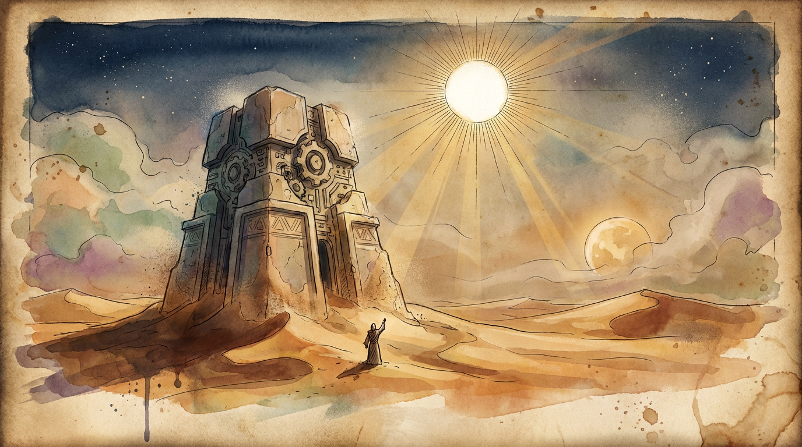

Frontier Release
OpenAI ships GPT-6.2 in two flavours, Astra and Sol
OpenAI released GPT-6.2 Astra, a frontier model for its hardest professional, scientific, visual and engineering work, alongside GPT-6.2 Sol, a cheaper model tuned for everyday use and multistep agentic workflows. Both are live in ChatGPT Work, Codex and the API, and OpenAI says they reach better results while emitting fewer output tokens.